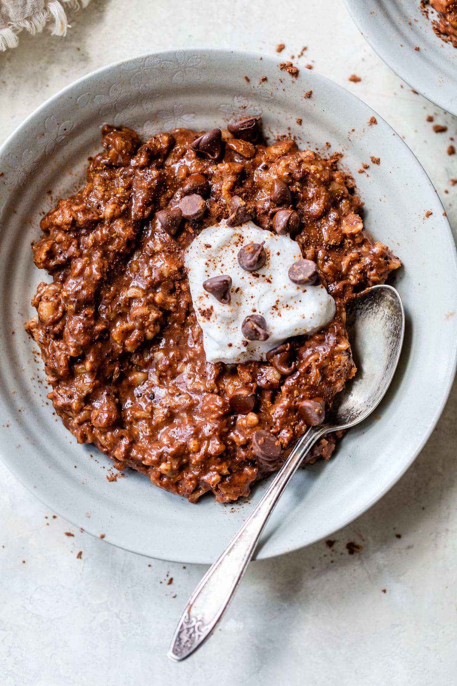

Chocolate Oatmeal

Description
For mornings that require a little indulgence, this Chocolate Oatmeal with cocoa powder is my go to!
It is chocolaty, complexly flavored enough to satisfy my cravings and most importantly: only takes a few minutes to make.
Note:
The portions in this article is for a single serving so keep this in mind in case you're making it for ppl with you:)
Ingredients
For the Base:
- 1/2 cup oats
- 1/3 cup milk
- 1 scoop protein powder
- 2 dates
- 2 tbsp cocao
- pinch of salt
- 1 tbsp baking powder
For the Topping:
- 1 tbsp peanut butter
- 1 tbsp maple syrup
Steps
Add all ingredients in a blender
Pour the mixture in a heatproof bowl
In another bowl, mix the toppings' ingredients then add them to your base mix
Bake @ 205 Celsius for 24 minutes or microwave for 3 minutes.